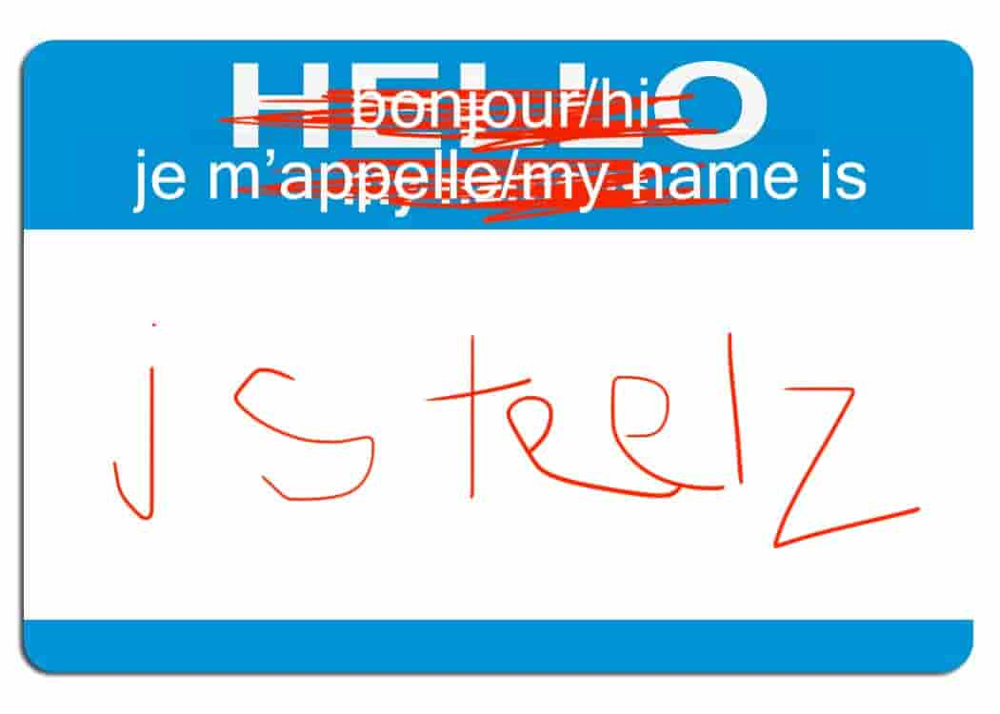

🚲🚌🚲🚌🚲🚌🚲🚌🚲🚌🚲🚌🚲🚌🚲🚌🚲🚌🚲🚌🚲🚌🚲🚌🚲🚌🚲🚌🚲🚌🚲🚌🚲🚌🚲🚌🚲🚌🚲🚌🚲🚌🚲🚌🚲🚌🚲🚌🚲🚌🚲🚌🚲🚌🚲🚌🚲🚌🚲🚌🚲🚌🚲🚌🚲🚌🚲🚌🚲🚌🚲🚌🚲🚌🚲🚌🚲🚌🚲🚌🚲🚌🚲🚌🚲🚌🚲🚌🚲🚌🚲🚌🚲🚌🚲🚌🚲🚌🚲🚌🚲🚌🚲🚌
anti-voiture since middle school
the 24 est mon ex 💔
now i ride mon beucyk mostly 🥲
mais j'aime la stm always
and tout kinds of transport public
donc chu développeur backend at transit
where je travaille sur international data standards
et supplemental projets open source
bon c'est pas mal that i guess
🚲🚌🚲🚌🚲🚌🚲🚌🚲🚌🚲🚌🚲🚌🚲🚌🚲🚌🚲🚌🚲🚌🚲🚌🚲🚌🚲🚌🚲🚌🚲🚌🚲🚌🚲🚌🚲🚌🚲🚌🚲🚌🚲🚌🚲🚌🚲🚌🚲🚌🚲🚌🚲🚌🚲🚌🚲🚌🚲🚌🚲🚌🚲🚌🚲🚌🚲🚌🚲🚌🚲🚌🚲🚌🚲🚌🚲🚌🚲🚌🚲🚌🚲🚌🚲🚌🚲🚌🚲🚌🚲🚌🚲🚌🚲🚌🚲🚌🚲🚌🚲🚌🚲🚌🚲🚌🚲🚌🚲🚌🚲🚌🚲🚌🚲🚌🚲🚌🚲🚌🚲🚌🚲🚌🚲🚌🚲🚌🚲🚌🚲🚌🚲🚌🚲🚌🚲🚌🚲🚌🚲🚌🚲🚌🚲🚌🚲🚌🚲🚌🚲🚌🚲🚌🚲🚌🚲🚌🚲🚌🚲🚌🚲🚌🚲🚌🚲🚌🚲🚌🚲🚌🚲🚌🚲🚌🚲🚌🚲🚌🚲🚌🚲🚌🚲🚌🚲🚌🚲🚌🚲🚌🚲🚌🚲🚌🚲🚌🚲🚌🚲🚌🚲🚌🚲🚌🚲🚌🚲🚌🚲🚌🚲🚌🚲🚌🚲🚌🚲🚌🚲🚌🚲🚌🚲🚌🚲🚌🚲🚌🚲🚌🚲🚌🚲🚌🚲🚌🚲🚌🚲🚌🚲🚌🚲🚌🚲🚌🚲🚌🚲🚌🚲🚌🚲🚌🚲🚌🚲🚌🚲🚌🚲🚌🚲🚌🚲🚌🚲🚌🚲🚌🚲🚌🚲🚌🚲🚌🚲🚌🚲🚌🚲🚌🚲🚌🚲🚌🚲🚌🚲🚌🚲🚌🚲🚌🚲🚌🚲🚌🚲🚌🚲🚌🚲🚌🚲🚌🚲🚌🚲🚌🚲🚌🚲🚌🚲🚌🚲🚌🚲🚌🚲🚌🚲🚌🚲🚌🚲🚌🚲🚌🚲🚌🚲🚌🚲🚌🚲🚌🚲🚌🚲🚌🚲🚌🚲🚌🚲🚌🚲🚌🚲🚌🚲🚌🚲🚌🚲🚌🚲🚌🚲🚌🚲🚌🚲🚌🚲🚌🚲🚌🚲🚌🚲🚌🚲🚌🚲🚌🚲🚌🚲🚌🚲🚌🚲🚌🚲🚌🚲🚌🚲🚌🚲🚌🚲🚌🚲🚌🚲🚌🚲🚌🚲🚌🚲🚌🚲🚌🚲🚌🚲🚌🚲🚌🚲🚌🚲🚌🚲🚌🚲🚌🚲🚌🚲🚌🚲🚌🚲🚌🚲🚌🚲🚌🚲🚌🚲🚌🚲🚌🚲🚌🚲🚌🚲🚌🚲🚌🚲🚌🚲🚌🚲🚌🚲🚌🚲🚌🚲🚌🚲🚌🚲🚌🚲🚌🚲🚌🚲🚌🚲🚌🚲🚌🚲🚌🚲🚌🚲🚌🚲🚌🚲🚌🚲🚌🚲🚌🚲🚌🚲🚌🚲🚌🚲🚌🚲🚌🚲🚌🚲🚌🚲🚌🚲🚌🚲🚌🚲🚌🚲🚌🚲🚌🚲🚌🚲🚌🚲🚌🚲🚌🚲🚌🚲🚌🚲🚌🚲🚌🚲🚌🚲🚌🚲🚌🚲🚌🚲🚌🚲🚌🚲🚌🚲🚌🚲🚌🚲🚌🚲🚌🚲🚌🚲🚌🚲🚌🚲🚌🚲🚌🚲🚌🚲🚌🚲🚌🚲🚌🚲🚌🚲🚌🚲🚌🚲🚌🚲🚌🚲🚌🚲🚌🚲🚌🚲🚌🚲🚌🚲🚌🚲🚌🚲🚌🚲🚌🚲🚌🚲🚌🚲🚌🚲🚌🚲🚌🚲🚌🚲🚌🚲🚌🚲🚌🚲🚌🚲🚌🚲🚌🚲🚌🚲🚌🚲🚌🚲🚌🚲🚌🚲🚌🚲🚌🚲🚌🚲🚌🚲🚌🚲🚌🚲🚌🚲🚌🚲🚌🚲🚌🚲🚌🚲🚌🚲🚌🚲🚌🚲🚌🚲🚌🚲🚌🚲🚌🚲🚌🚲🚌🚲🚌
{kind=link}